Ägypten
🇪🇬
Mein Land bei der WM 2026
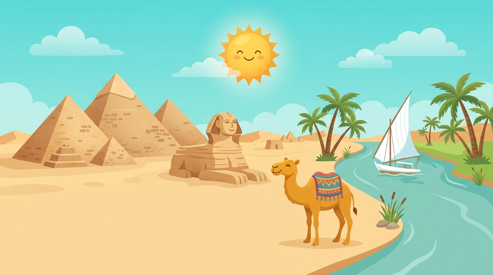
So arbeitest du mit diesem Heft: Lies die Texte zu deinem Land. Unter jedem Absatz steht eine kleine Zeile mit Folien-Wörtern. Genau diese Wörter findest du später in der App wieder und tippst sie an, wenn du deine Folien baust.
Hier stehen die wichtigsten Daten zu deinem Land. In der App baust du daraus deinen eigenen Steckbrief.
| Hauptstadt | Kairo |
| Kontinent | Afrika |
| Sprache | Arabisch |
| Währung | Ägyptisches Pfund |
| Einwohner | etwa 115 bis 120 Millionen Menschen |
| Fläche | etwa 1 Million km², fast so groß wie Deutschland, Österreich und die Schweiz zusammen |
| Großer Fluss | der Nil, einer der längsten Flüsse der Welt |
| Nachbarländer | Libyen, Sudan und Israel; am Roten Meer und am Mittelmeer |
Ägypten – Sachtext-Workbook · WM 2026 · Seite 1
In Ägypten gibt es viele berühmte Orte. Diese vier solltest du kennen.

Pyramiden von GizehDie Pyramiden von Gizeh sind die bekanntesten Bauwerke der Welt und gelten als ein echtes Weltwunder. Vor fast 5000 Jahren wurden sie ganz aus Stein als Grabmäler für die Pharaonen errichtet. Bis heute stehen die riesigen Bauten am Rand der Wüste. Die größte heißt Cheops-Pyramide und ist etwa 140 Meter hoch, also höher als jedes Haus bei uns. Für den Bau wurden über zwei Millionen schwere Steinblöcke aufeinandergestapelt. Niemand weiß bis heute ganz genau, wie die Menschen das ohne Maschinen geschafft haben.
Grüne Wörter für die AppGrabmalPharaonenWüsteWeltwunderaus Stein
SphinxDirekt neben den Pyramiden liegt die Sphinx, eine riesige Figur aus Stein. Sie hat den Körper eines Löwen und den Kopf eines Menschen. Wie ein Wächter bewacht sie die Gräber, und das schon seit sehr langer Zeit. Die Sphinx ist etwa 20 Meter hoch und über 70 Meter lang, damit ist sie länger als ein Schwimmbecken. Sie wurde aus einem einzigen großen Felsen herausgehauen. Der Wüstensand hat sie früher fast ganz zugedeckt, erst später gruben die Menschen sie wieder frei.
Grüne Wörter für die AppLöwenkörperMenschenkopfaus SteinWächtersehr alt
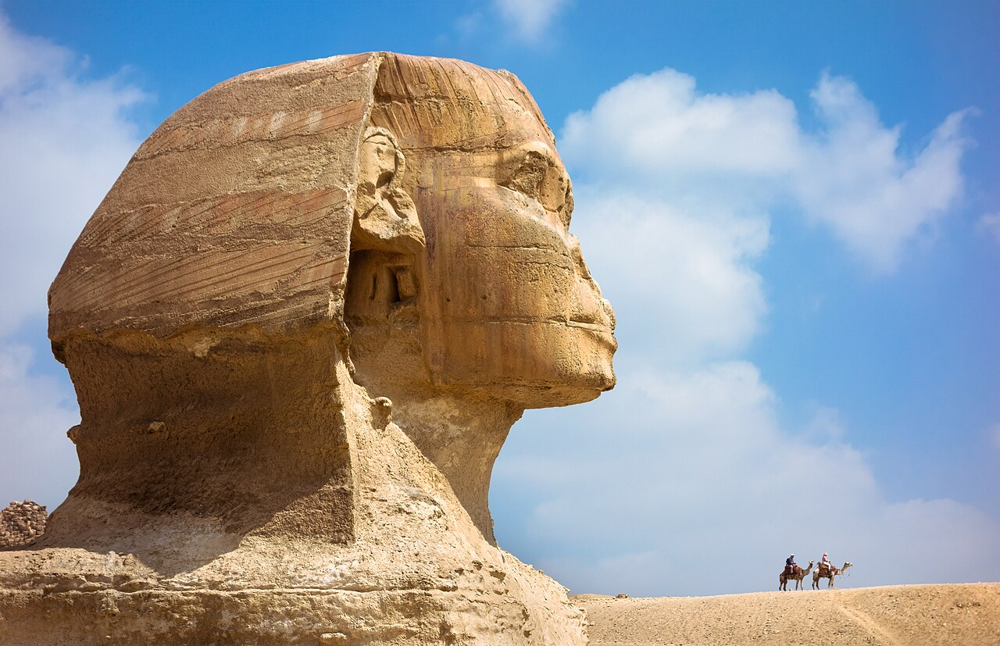
Ägypten – Sachtext-Workbook · WM 2026 · Seite 2
Hier kommen die letzten beiden berühmten Orte.
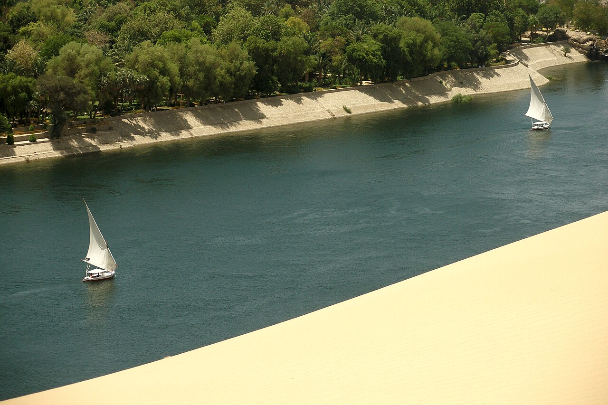
Nil-KreuzfahrtDer Nil ist ein langer Fluss und bringt Wasser mitten durch das sonst trockene Land. Bei einer Nil-Kreuzfahrt fährt man mit dem Boot am Ufer entlang und sieht dabei alte Tempel und kleine Dörfer. Schon vor langer Zeit segelten die Menschen mit hölzernen Booten über den Fluss. Links und rechts vom Wasser ist alles grün, denn nur dort können die Bauern ihre Felder bewässern. Weiter weg vom Ufer beginnt sofort die trockene Wüste.
Grüne Wörter für die Applanger Flussmit dem Bootalte Tempelam UferWasser
Tal der KönigeDas Tal der Könige liegt bei der Stadt Luxor. Dort wurden viele Pharaonen in versteckten Gräbern begraben. Die Wände sind bunt bemalt, und früher lagen in den Kammern große Schätze aus Gold. Das berühmteste Grab gehört dem jungen König Tutanchamun. In seiner goldenen Maske kann man ihn bis heute bestaunen. Die Gräber wurden tief in den Felsen gegraben, damit Grabräuber die Schätze nicht so leicht finden konnten.
Grüne Wörter für die AppPharaonen-Gräberbei Luxorbunt bemaltverstecktSchätze
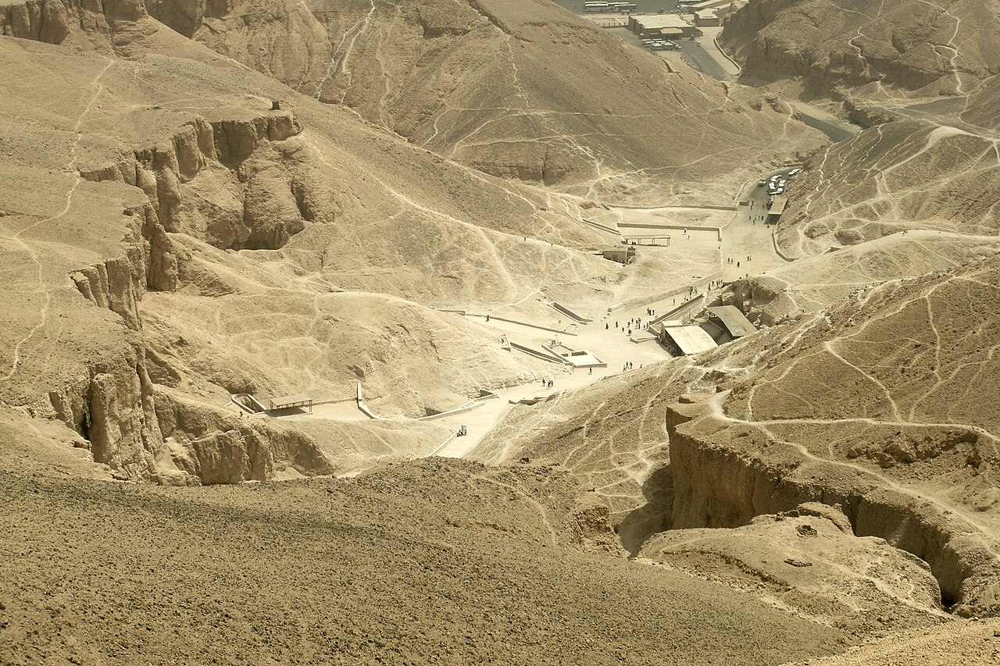
Ägypten – Sachtext-Workbook · WM 2026 · Seite 3
In Ägypten leben Tiere, die du bei uns nicht in der Natur findest.
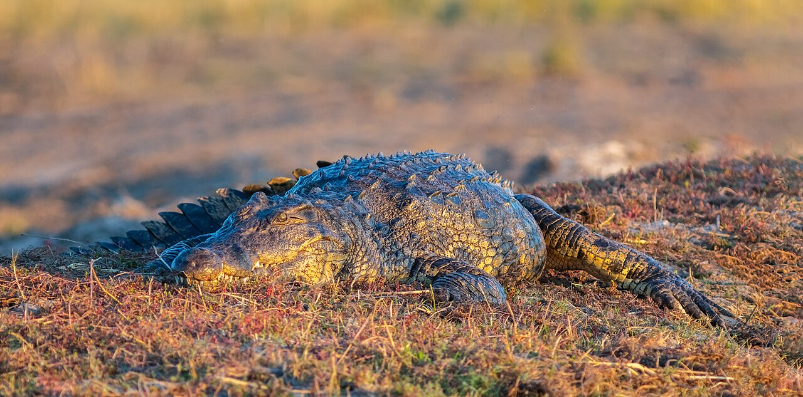
NilkrokodilDas Nilkrokodil lebt im Nil und ist ein riesiges Reptil. Es kann über fünf Meter lang werden und hat scharfe Zähne. Darum ist es ziemlich gefährlich. Oft liegt es ganz ruhig am Ufer und wartet auf Beute. Ein großes Krokodil kann mehr wiegen als 500 Kilogramm. Das Weibchen legt seine Eier in ein Nest am Ufer und bewacht sie. Die alten Ägypter hatten großen Respekt vor dem Tier und verehrten sogar einen Krokodil-Gott.
Grüne Wörter für die Applebt im Nilüber 5 MeterReptilscharfe Zähnegefährlich
DromedarDas Dromedar ist ein Kamel mit nur einem Höcker und ein echtes Wüstentier. Es kommt lange ohne Wasser aus, trägt schwere Lasten durch den heißen Sand und ist oft bei den Pyramiden zu sehen. In seinem Höcker speichert es Fett, davon kann es tagelang zehren. Die langen Wimpern und die verschließbaren Nasenlöcher schützen es vor dem Sand. Wenn es endlich trinkt, schafft es sehr viel Wasser auf einmal.
Grüne Wörter für die Appein HöckerWüstentierKamelträgt Lastenbei den Pyramiden
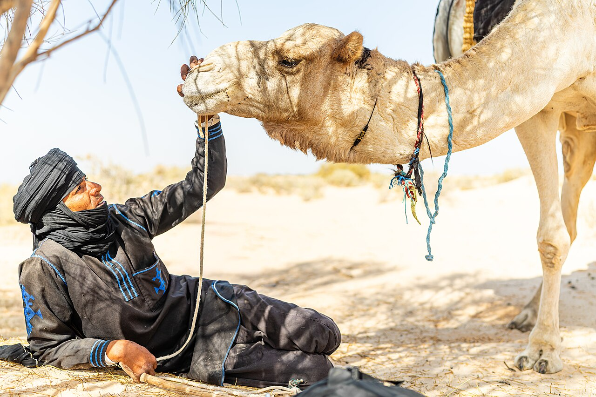
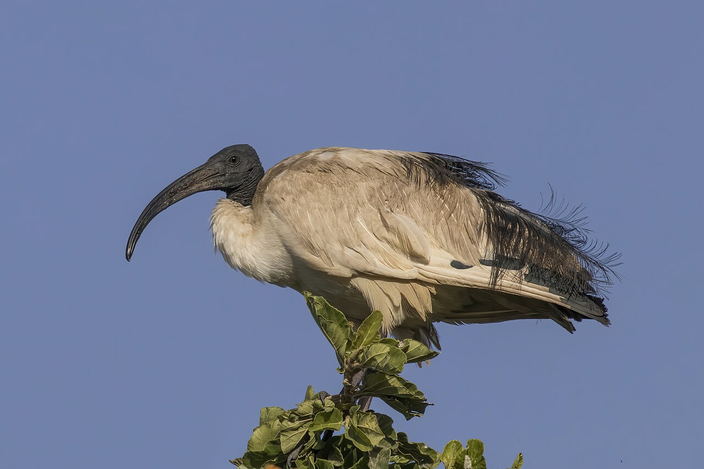
IbisDer Ibis ist ein weißer Wasservogel mit einem langen, nach unten gebogenen Schnabel. Die alten Ägypter hielten ihn für heilig und malten ihn oft an die Wände ihrer Tempel. Mit seinem krummen Schnabel stochert er im Schlamm nach Würmern und kleinen Tieren. Für die Ägypter stand der Vogel für den Gott Thot, den Gott der Schrift. Heute ist diese Art in Ägypten selten geworden.
Grüne Wörter für die AppWasservogellanger Schnabelwar heiligGott Thotstochert im Schlamm
Ägypten – Sachtext-Workbook · WM 2026 · Seite 4
In der App kannst du beim Essen das Foto nehmen oder dein Gericht selbst malen.
KushariKushari ist das Lieblingsgericht vieler Ägypter. Es besteht aus Nudeln und Reis mit Linsen und einer würzigen Tomatensauce. Obendrauf kommen knusprige Röstzwiebeln. Das Gericht ist günstig und macht satt. Oft kommen auch Kichererbsen dazu. In den Städten gibt es viele Läden, die nur Kushari verkaufen. Es ist ein Essen ganz ohne Fleisch, deshalb können es alle gut essen.
Grüne Wörter für die AppNudeln und ReisLinsenTomatensauceRöstzwiebelnmacht satt
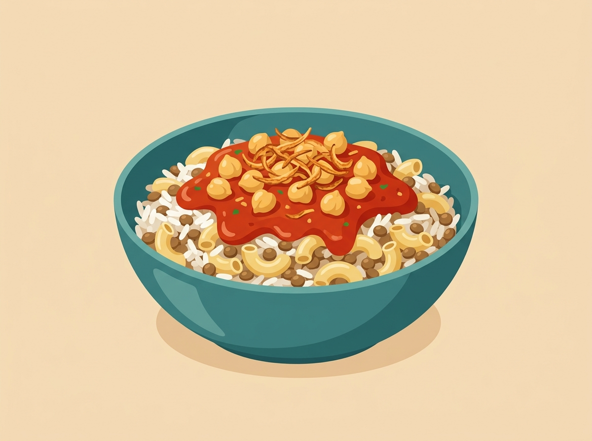
FalafelFalafel sind kleine Bällchen aus Bohnen, die in heißem Öl frittiert werden. Man isst sie gern zum Frühstück, eingewickelt im Fladenbrot und mit frischem Gemüse. In Ägypten heißen sie auch Taameya. Anders als in vielen Ländern macht man sie hier aus dicken Bohnen statt aus Kichererbsen. Frische Kräuter geben dem Teig innen eine grüne Farbe. Außen sind die Bällchen knusprig braun und innen ganz weich.
Grüne Wörter für die Appkleine Bällchenaus Bohnenfrittiertim Fladenbrotzum Frühstück
Umm AliUmm Ali ist ein süßes Dessert aus Brot und Milch mit Nüssen und Rosinen. Man isst es am liebsten warm, besonders an Festtagen. Der Name bedeutet übersetzt „Mutter von Ali". Das Brot saugt die warme Milch auf und wird dabei ganz weich. Es schmeckt ein bisschen wie ein warmer Pudding und ist sehr beliebt.
Grüne Wörter für die Appsüßes DessertBrot und MilchNüsse und Rosinenan Festtagenwie Pudding
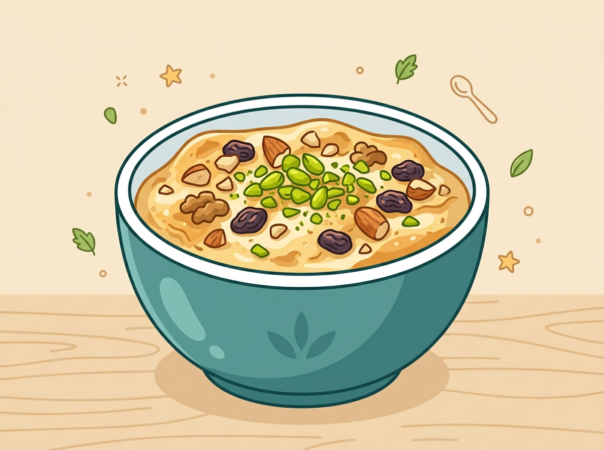
Ägypten – Sachtext-Workbook · WM 2026 · Seite 5
★ Wahl-Thema: Fußball oder Kinderalltag (mindestens eins)
⚽ Gut zu wissen
Die Fußball-Nationalmannschaft von Ägypten heißt die Pharaonen und spielt im rot-weißen Trikot. Das Land war schon viermal bei der WM dabei (1934, 1990, 2018 und 2026) und gehört zu den stärksten Teams in Afrika, den Afrika-Cup hat es sogar sieben Mal gewonnen. Damit hat Ägypten diesen großen Pokal öfter geholt als jedes andere Land in Afrika. Ägypten war 1934 außerdem die erste afrikanische Mannschaft überhaupt bei einer WM.
Grüne Wörter für die Approt-weißes Trikot4x bei der WMstark in AfrikaMohamed Salahder König
🌟 Profi-Wissen
Der bekannteste Spieler ist Mohamed Salah. Er spielt in England beim FC Liverpool und trifft sehr viele Tore. In Ägypten ist er ein Nationalheld, alle nennen ihn den König von Ägypten. Ägypten hat viermal den Afrika-Cup gewonnen, das ist der wichtigste Pokal für Nationalteams in Afrika.
Grüne Wörter für die AppMohamed SalahLiverpool-Star4x Afrika-CupKönig von ÄgyptenPharaonen
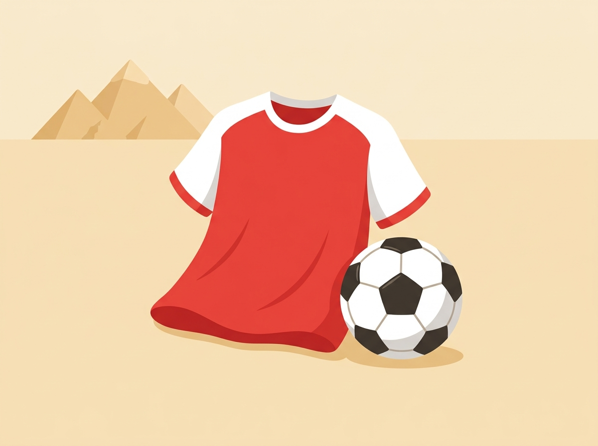
Ägypten – Sachtext-Workbook · WM 2026 · Seite 6
★ Wahl-Thema: Fußball oder Kinderalltag (mindestens eins)
Schule in ÄgyptenIn Ägypten gehen die Kinder von Sonntag bis Donnerstag zur Schule, das Wochenende ist am Freitag und Samstag, also genau andersherum als bei uns. Der Unterricht beginnt früh am Morgen, oft müssen die Kinder zuerst die Flagge grüßen und die Hymne singen. Weil es so heiß werden kann, ist die Schule oft schon am frühen Nachmittag zu Ende. In der Schule lernen die Kinder auch das arabische Schreiben, das von rechts nach links geht. Viele tragen eine einheitliche Schulkleidung.
Grüne Wörter für die AppSonntag bis DonnerstagWochenende Fr und SaFlagge grüßenHymne singenfrüh am Morgen
Markt und TeeViele Familien kaufen frisches Obst und Gemüse auf dem Markt ein, den man Souk nennt. Das beliebteste Getränk ist Tee, auf Arabisch Schai. Wenn Besuch kommt, wird er fast immer mit einem Glas Tee begrüßt. Auf dem Souk wird oft laut um den Preis gehandelt, bis sich beide einig sind. Der Tee wird heiß und sehr süß in kleinen Gläsern getrunken. Gastfreundschaft ist den Menschen in Ägypten sehr wichtig.
Grüne Wörter für die AppSoukfrisches ObstTeeSchaiBesuch begrüßen
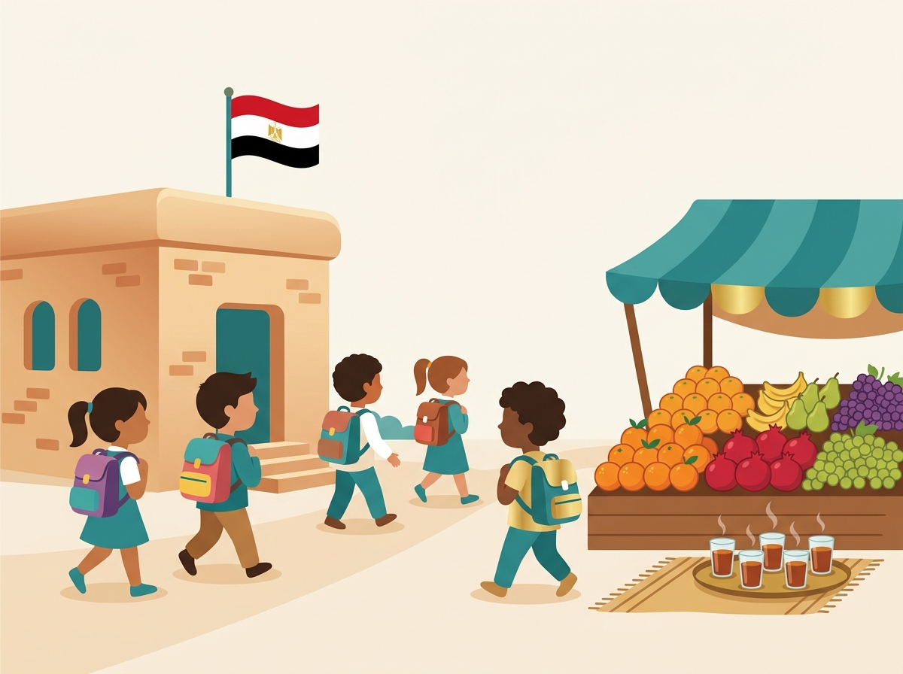
Ägypten – Sachtext-Workbook · WM 2026 · Seite 7